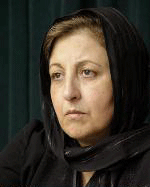

پذيرش > سایت نوشته ها > آفرين به اين استدلال/شيرين عبادي/روزآنلاين


 آفرين به اين استدلال/شيرين عبادي/روزآنلاين آفرين به اين استدلال/شيرين عبادي/روزآنلاين
30 آذر 1386 - - نسخه قابل چاپ
برخورد با اعضاي فعال کمپين يک ميليون امضا در کشور ما، با شدت و حدت هر چه تمام تر، بي وقفه ادامه دارد. اين کمپين، مسالمت آميزترين شيوه قابل تصور اعتراض شهروندان در يک جامعه است: شيوه درخواست از نهادهاي حکومتي، براي آن که در چارچوب مقررات خود، تعدادي از مواد قانوني را مورد تجديد نظر قرار دهند. اما با وجود اين، دستگاه قضايي در احضار، محاکمه و مجازات فعالان اين حرکت مسالمت آميز، که از همگي دختران و زنان داراي سوابق ممتد در حرکت هاي داوطلبانه عام المنفعه هستند، چنان پشتکاري به خرج مي دهد که باور نکردني است.
نکته قابل تأمل در اقدامات صورت گرفته عليه فعالان کمپين اين است که در جريان آن، باز با پشتکاري مثال زدني، سعي مي شود تا دليل اصلي برخورد با اين فعالان که درخواست تغيير قوانين تبعيض آميز است، مطرح نشود. به عبارت ديگر دستگاه قضايي، تمام تلاش خود را در جهت پنهان کردن علت مشخصي که باعث تشکيل پرونده براي فعالان کمپين مي شود به کار مي بندد و اتهام تکراري دادگاه عليه فعالان کمپين نيز، "اقدام عليه امنيت ملي" است. ظاهراً قضات هيچ نگراني اي هم از بابت پاسخ گويي به اين ابهام ندارند که چگونه مي توان دختران و مادراني را که در چارچوب قوانين "جمهوري اسلامي ايران"، از "مجلس شوراي اسلامي" مي خواهند در تعدادي از قوانين کشور تجديد نظر کند، به اقدام عليه امنيت ملي متهم کرد؛ که عنواني اتهامي است که مثلا به جاسوسان يا کساني که مقابله مسلحانه با حکومت مي پردازند اطلاق مي شود.
براي درک بهتر نوع برخوردهايي که با فعالان کمپين يک ميليون امضا صورت مي گيرد، مي توان به مورد مريم حسين خواه اشاره کرد. دختر جواني که در دادگاه با شهامت از حقانيت خواسته هايش دفاع کرده - و حتي پس از زنداني شدن نيز وظيفه خود در دفاع از حقوق زنان را از ياد نبرده و فعالانه به درج اختبار زندانيان زن و کمک به آنها مي پردازد. دادگاه با صدور قرار وثيقه سنگين 100 ميليون توماني (که تهيه آن از عهده اش خارج بود) اين فعال حقوق زنان را به زندان فرستاده است. جالب است که با وجود آن که صاحب امتياز يکي از مهمترين روزنامه هاي ايران حاضر شده شخصاً کفالت مريم حسين خواه را به عهده بگيرد، اما قاضي حاضر به آزاد کردن او نيست. جالب تر اين که وقتي همسر او گفته که وي و مريم امکان تهيه مبلغ سنگين وثيقه را ندارند و سخن فوق در برخي سايت هاي اينترنتي منعکس شده، آن مرد جوان مورد عتاب و خطاب مسوولان قرار گرفته که چرا با بيان اين قبيل سخنان، عليه قوه قضاييه تبليغ مي کند!
اين شيوه برخورد با پرونده مريم حسين خواه، يکي از ده ها نمونه برخورد نامتعارفي است که در دستگاه قضايي ما، با فعالان حقوق زنان صورت مي گيرد. بر مبناي چه تعريفي از علم حقوق، اشاره مرد جواني به عدم توانايي در تامين وثيقه، تبليغ عليه دستگاه قضايي است، يا رفتار زن خواني که که مي خواهد قانوني که به همسرش اجازه ازدواج مجدد را مي دهد لغو شود، امنيت ملي را به خطر مي اندازد؟ به راستي بايد به قدرت استدلال کساني که مخالفت با حق تعدد زوجات يا طرفداري از حق برابر زنان با مردان در طلاق، شهادت يا ارث را ضربه به امنيت ملي تلقي مي کنند، آفرين گفت!
اين نوع استدلال، نه تنها کمکي به امنيت ملي نمي کند، که خود بزرگترين ضربه به امنيت ملي است. کساني که گوي اصرار دارند ثابت کنند جمهوري اسلامي به ميزاني شکننده شده است که اقداماتي در حد امضا جمع کردن تعدادي از مادران و دختران ايراني براي تجدد نظر در قوانين باعث فرو ريختن بنيان هاي امنيتي آن مي شود، در واقع تعريفي بسيار مشخص از ثبات حکومت ايران ارائه مي دهند که بيش از هر چيز، به ضرر خود حکومت است. اي کاش آنها، از بيان عقيده خود شرمسار نبودند که آنچه نگران آن هستند، نه امنيت ملي، که امنيت نظام مرد سالارانه اي که وظيفه حفظ و صيانت از آن را - با علم به بيهودگي تلاش خود - به عهده گرفته اند.
آيا بهتر نيست مسوولاني که براي برخورد با فعالان کمپين يک ميليون امضا به هر استدلال محير العقولي متوسل مي شوند، به جاي تقبل اين همه زحمت در توضيح اتهامات امينتي، تکليف خود را با اين حرکت روشن کنند و با صراحت اعلام نمايند که صحبت از برابري زن و مرد را جرم مي دانند؟
آفرين به استدلال
ارسال به
بالاترین
،
توییتر
،
فریندفید
،
فیسبوک
در همين بخش :
 یک خبر تلخ؟ یک قانونشکنی؟ یک تصمیم بخشنامهای جدید؟ یک خبر تلخ؟ یک قانونشکنی؟ یک تصمیم بخشنامهای جدید؟
چرا بایست به سکسوالیته پرداخت؟ / نفیسه آزاد
آزارجنسی خانگی؛ «قربانی» نه، «نجات یافته»
زنان، بزرگترین بازندگان بهار عرب
سانسور از دیدگاه جنسیتی/الهه امانی
ديگر بخش ها :
طرح یک میلیون امضا
|
مقالات
|
سایت نوشته ها
|
اخبار
|
گزارش كمپين
|
گفت و گو
|
علیه سکوت
|
كوچه به كوچه
|
نامه های شما
|
گزارش ویژه
|
گفتگو با اعضا
|
ویژه سالگرد کمپین
|
تصویر برابری
|
دل آرام علی
|
تریبون
|
مقالات
|
تاریخ شفاهی
|
خارج از چارچوب
|
کتابخانه
|
درباره کمپین
|
کمپین در شهرها
|
کمپین در بند
|
صدای تغییر
|
ویژه 22 خرداد
|
لایحه حمایت از خانواده
|
گالری
|
عشا مومنی
|
امیر یعقوبعلی
|
خدیجه مقدم
|
راحله عسگری زاده و نسیم خسروی
|
پروین اردلان،جلوه جواهری، مریم حسین خواه، ناهید کشاورز
|
زینب پیغمبرزاده
|
سعیده امین، سارا ایمانیان، محبوبه حسین زاده، ناهید کشاورز و همایون نامی
|
احترام شادفر
|
نسیم سرابندی زاده،فاطمه دهدشتی
|
وبلاگ مهمان
|
پرونده خرم آباد
|
دستگیری ها
|
مریم مالک
|
پرستو اللهیاری
|
مهرنوش اعتمادی
|
سمیه رشیدی
|
Other Languages
|
همراهان
|
«فراخوان کمپین ده روز با بهاره هدایت»
| English
|